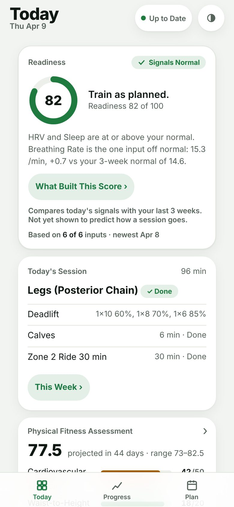
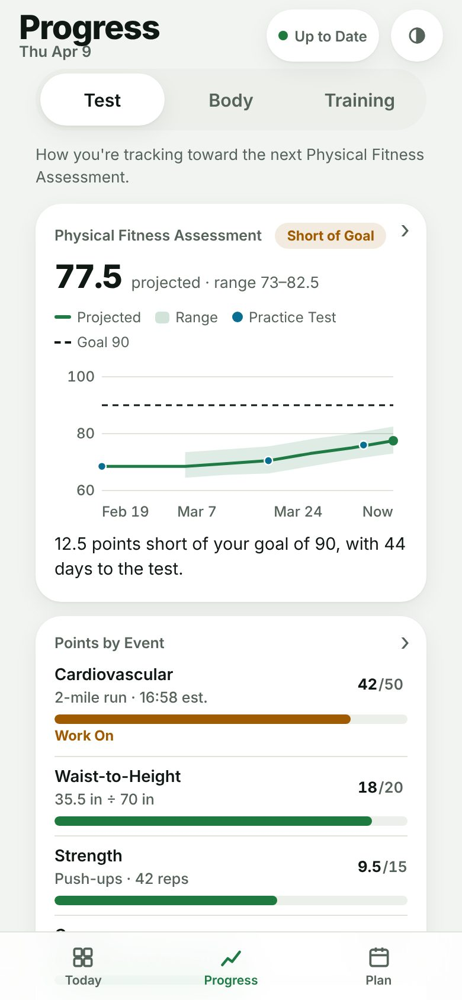
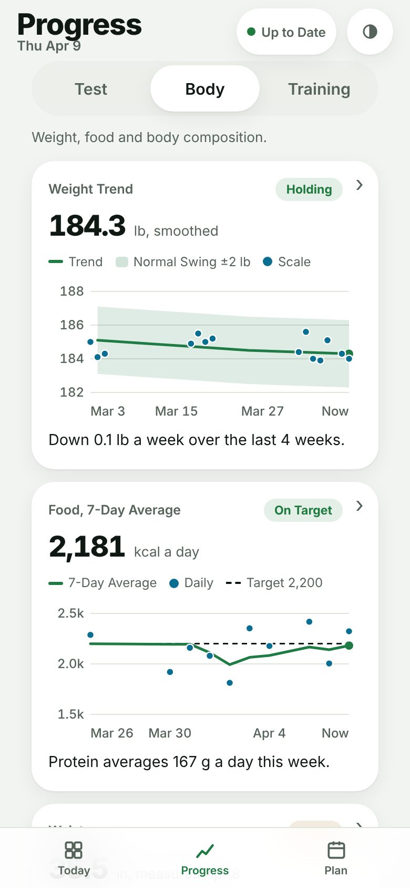
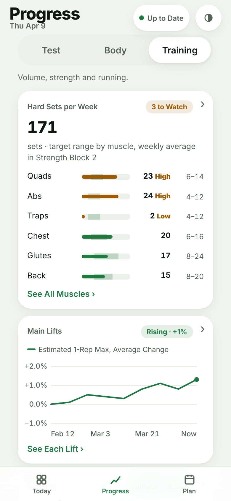
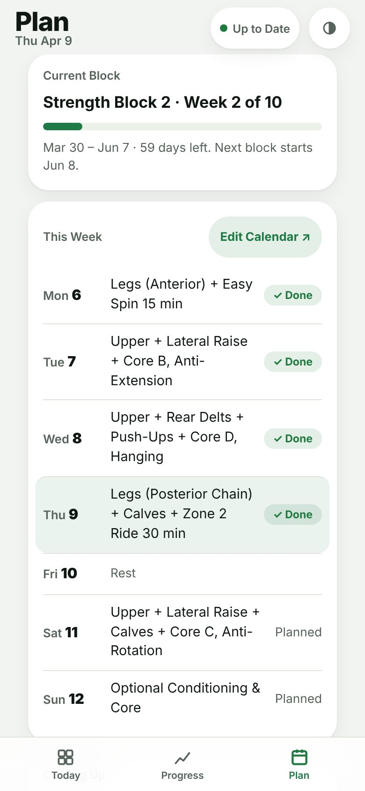
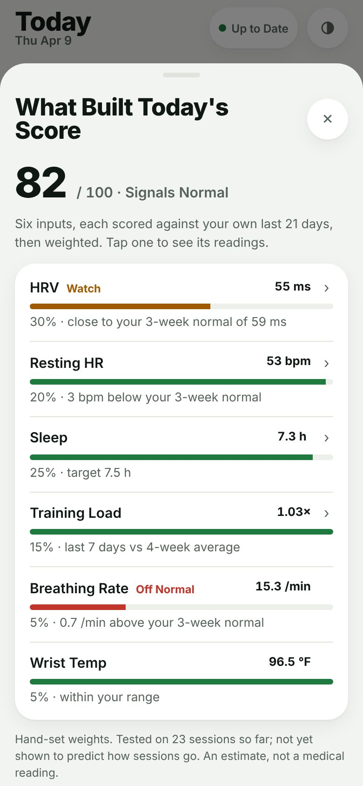
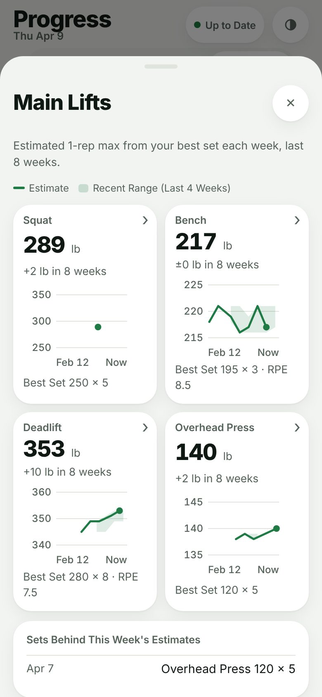
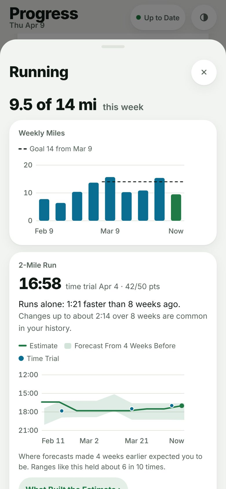

Ready for test day? Check every morning.
A daily train-or-rest call and a Physical Fitness Assessment forecast, both built from your own watch and training data. The forecast updates with every workout. Its range comes from how far your past forecasts missed, and those misses have been smaller closer to test day.

Inside the app
Progress toward test day and the plan to get there, then the detail behind each number. Shown with demo data.




More inside: tap any number to see what built it



How it works
What it can't tell you
- Whether you're sick or hurt. It can flag signs that often come with getting sick, but it reads trends, not symptoms, and it isn't medical advice.
- Your official score. A projected score is a forecast, not a result.
- How you compare with anyone else. Every score is measured against your own history.
Built on
- Apple Health, Strava, Liftosaur and MacroFactor exports
- USAF PFRA scoring tables (DAFMAN 36-2905, March 2026)
- A single-file web app. Real data stays private, behind sign-in.
- Shows: joining messy data sources, personalized forecasting, and product design
How the numbers are built
Problem
The test is one morning; readiness for it takes months, spread across four apps that don't talk. Delta pulls them together to answer two questions: train as planned or ease off today, and are you on track?
Inputs and sources
| Input | Source | Used for |
|---|---|---|
| HRV | Apple Health | Readiness, 30% |
| Sleep | Apple Health | Readiness, 25% |
| Resting heart rate | Apple Health | Readiness, 20% |
| Training load | Liftosaur, Strava | Readiness, 15% |
| Breathing rate, wrist temp | Apple Health | Readiness, 5% each |
| Runs | Strava | 2-mile projection |
| Waist, height | Tape log | Waist-to-height points |
| Push-ups, core events | Your logged results | Strength and core points |
| Weight, intake | MacroFactor | Nutrition and trend weight |
The model
Readiness. HRV (7-day average), resting heart rate, breathing rate and wrist temperature are compared with your last 21 days; sleep with a 7.5-hour target; training load with your 4-week average. Each is scored 0–100 and weighted as above, and missing signals drop out. 70 and up reads Signals Normal (train as planned), 55 to 69 Signals Below Normal (consider keeping hard efforts controlled), under 55 Signals Well Below Normal (consider an easy day). Wrist temperature and resting heart rate rising together override the score with Possible Illness. The weights are set by hand and not yet tested against how sessions went.
PT score. Cardio 50, waist-to-height 20, strength 15, core 15, scored on the official AFPC chart rows for your age group and sex (effective 1 Mar 26). 75 passes, 90 is Excellent, and any missed minimum fails.
2-mile. A recent time trial wins. Otherwise your best three runs over 1.55 miles are converted with Riegel's formula, then adjusted by how far your runs read from your latest trial (training runs tend to read fast). Test day holds today's estimate: in a backtest over every week of history, holding beat extending the trend at every distance from 2 to 26 weeks. The past-miss range is the middle 80% of those misses at the same distance; on the PT total it moves only the run.
What kind of number. Watch readings and runs are measured. Readiness is a rule of thumb: the weights are set by hand and not yet tested against how sessions went. PT points are an official table lookup. Test-day run time and total are forecasts. Every number on these public pages, including the sample dashboard, is made up.
Should the 2-mile forecast follow the trend?
Why this study
The PT outlook answers one question: if the test were on its scheduled day, what would the 2-mile time be? The first version drew a line through the last nine weeks of run estimates and extended it to test day. While times were dropping, that projected a faster run, and a better score, every week.
Improvement rarely continues in a straight line. It slows as fitness builds, and it reverses after a break, an injury or a busy month. A forecast that assumes it continues can tell someone they're on track when they aren't. So the question was whether the trend adds information, or only optimism.
How it was tested
The test replayed history. For every past week, it used only the runs logged up to that week and made two forecasts for 2, 4, 6, 8, 12, 16 and 26 weeks ahead: one extending the recent trend (capped at 15 seconds a week), and one holding that week's estimate. Each forecast was then compared with the estimate the model actually reached that many weeks later, and scored by the size of the miss. A softened trend, at a quarter or half strength, was tested as well.
What it found
Holding beat the trend at every distance. Two weeks out, holding missed by 30 seconds on average against 37 for the trend; six months out, 2:12 against 3:03 (Table 1). The gap grew the further out the forecast reached, and the softened trends lost too. In this history, gains came in bursts between gaps and comebacks, and a straight line kept running past where the times actually settled.
The uncertainty was larger than it looked. A range built from the middle 80% of earlier misses caught the later result 71% of the time two weeks out, about half the time at 6 to 12 weeks, and less than a third of the time at 16 weeks or more.
| Weeks out | Extend trend | Hold estimate | Range held |
|---|---|---|---|
| 2 | 0:37 | 0:30 | 71% |
| 4 | 1:09 | 0:56 | 61% |
| 6 | 1:35 | 1:15 | 53% |
| 8 | 1:57 | 1:30 | 52% |
| 12 | 2:19 | 1:58 | 51% |
| 16 | 2:53 | 2:15 | 30% |
| 26 | 3:03 | 2:12 | 19% |
The test has a blind spot. It scores forecasts against later estimates from training runs, not against timed tests. If training runs read fast, and the one timed trial so far suggests they do, every estimate shares that bias and the test can't see it.
What changed
The forecast now holds today's estimate to test day. The range beside it is labeled the past-miss range: how far forecasts this far out have missed before, not the odds of landing inside it. Run estimates now adjust by the gap between the latest time trial and what training runs said that day.
What it tells you
Read the projected run as where you would land at today's fitness, not a promise that improvement will continue. The past-miss range shows how much that has moved before, and it widens and becomes less reliable the further away the test is. The fastest way to sharpen the forecast is a timed 2-mile every six to eight weeks: each one is a real outcome to check against and resets the adjustment.
What it can't tell you yet
The study uses one person's history and a single timed trial, so the adjustment for fast training runs is unproven. It covers the run only: the waist projection still follows an eight-week trend that hasn't been tested this way.
Validation
- Done2-mile estimate matches the detailed dashboard on the same data.
- DoneReadiness checked against 23 sessions: no link to how sessions went yet, so the score says whether to ease off, never how a session will go.
- PlannedRefit the readiness weights as more sessions are logged.
- DoneRange coverage, walk-forward: ranges held about 7 in 10 times at 2 weeks out, 6 in 10 at 4 weeks and about half at 8 to 12 weeks. No range is shown beyond 12 weeks.
- DoneEvery event, age group and sex checked cell by cell against the AFPC chart, with a test that fails if a row drifts.
- DoneBacktest 2-mile forecasts from every past week against the estimate weeks later, versus simply holding the estimate.
- DoneWalk-forward check of the range: bands built only from earlier weeks, scored on the weeks that followed.
- PlannedCheck the forecast and its range against real time trials as more are logged (one so far).
Limits
- An estimate from your data, not a medical reading.
- Readiness needs about a week of data to start.
- Lifting and nutrition are only as fresh as the last export.
- The range comes from your own past and was scored against later estimates, not timed trials. Bands built only from earlier weeks held about half the time 8+ weeks out, so read it as a floor on uncertainty.
Changelog
- 2026-11-24 Overview rebuilt around the app itself, with phone screenshots taken from the demo; readiness bands renamed to describe the signals (Signals Normal, Below Normal, Well Below Normal, Possible Illness); Method states the readiness and range checks plainly.
- 2026-11-23 Overview leads with the question and two paths; Method adds the forecast case; the range is named for what it is, the range of past misses.
- 2026-11-19 Today leads with the call, the signals behind it, and the PT outlook.
- 2026-11-20 2-mile forecast holds today's estimate with a tested likely range; run estimates calibrate to your latest trial.
- 2026-11-18 Projections aim at the next test after one is taken; PT charts checked cell by cell; saves from two devices no longer overwrite each other.
- 2026-10-24 Tighter copy across the app and these pages.
- 2026-10-23 Joined the Decision Models frame, with a public Overview, Method and demo.
- 2026-10-23 Renamed Delta Readiness, with the tactical HUD theme.
- 2026-10-23 Added the USAF PT test calculator with a test-day projection.